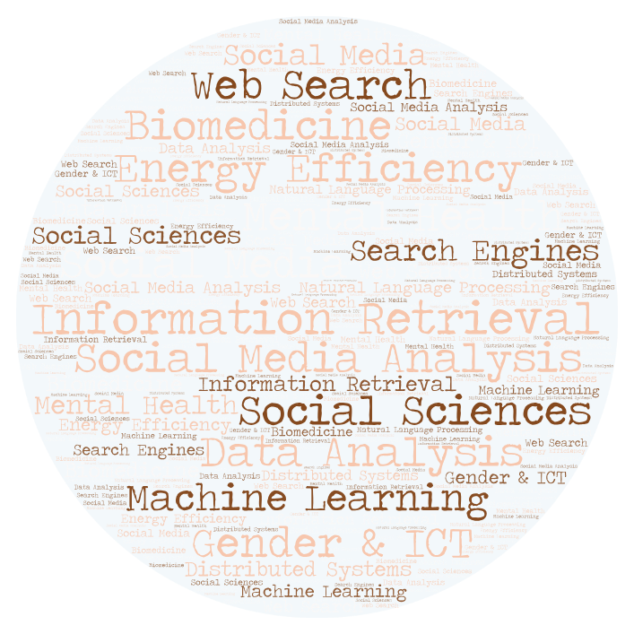

I am a postdoctoral researcher and Lecturer at Universitat Pompeu Fabra.
I got my PhD in Computer Science in 2014 at the University of A Coruña (Spain), in collaboration with the University of Glasgow (UK) and the National Research Council (Italy). At the last steps of my PhD I joined Yahoo Labs (Barcelona) as a visiting researcher.
publications
book editions
patents
awards and grants

My primary research interests belong to the area of web science and social computing. As a postdoctoral researcher I have been working in projects with a common core: applying data science to different claims of society. For instance, I solve optimization problems for energy conservation of large-scale web search engines (such as Google) and I perform analysis of social media and clinical data for detecting mental and neurological issues. This multidisciplinary research has allowed me to collaborate with several institutions and companies such as Yahoo Labs, the University of Glasgow, the National Research Council (Italy) or the Clínic Hospital (Barcelona).
The most famous world-wide school on Information Retrieval and Search Technology, founded in 1990. It provides high quality teaching to an audience of researchers and students.
The world’s premier research conference in data mining. It provides an international forum for presentation of original research results, as well as exchange and dissemination of innovative, practical development experiences.
September 2018
CASA Fellowship
Cornell University (USA)
Scholarship to do research at Weill Cornell Medicine for 3 months
July 2017
Quality Teaching Awards
Universitat Pompeu Fabra
Award for the application of innovative teaching techniques in the Degree in Telecommunication Engineering
April 2017
Equit@T Awards
COEINF Catalunya
Honorable Mention for the organization of Wisibilizalas, a contest to reduce the gender bias in tecnology in Primary and Secondary schools
November 2015
Big Data Talent Award
BigDataCoE Barcelona
Award to the PhD Thesis with the most social-economical impact